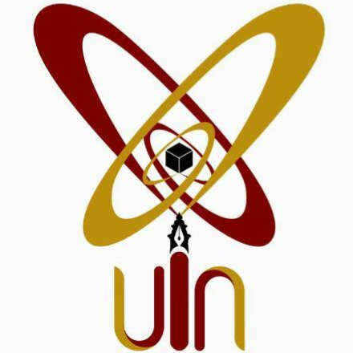
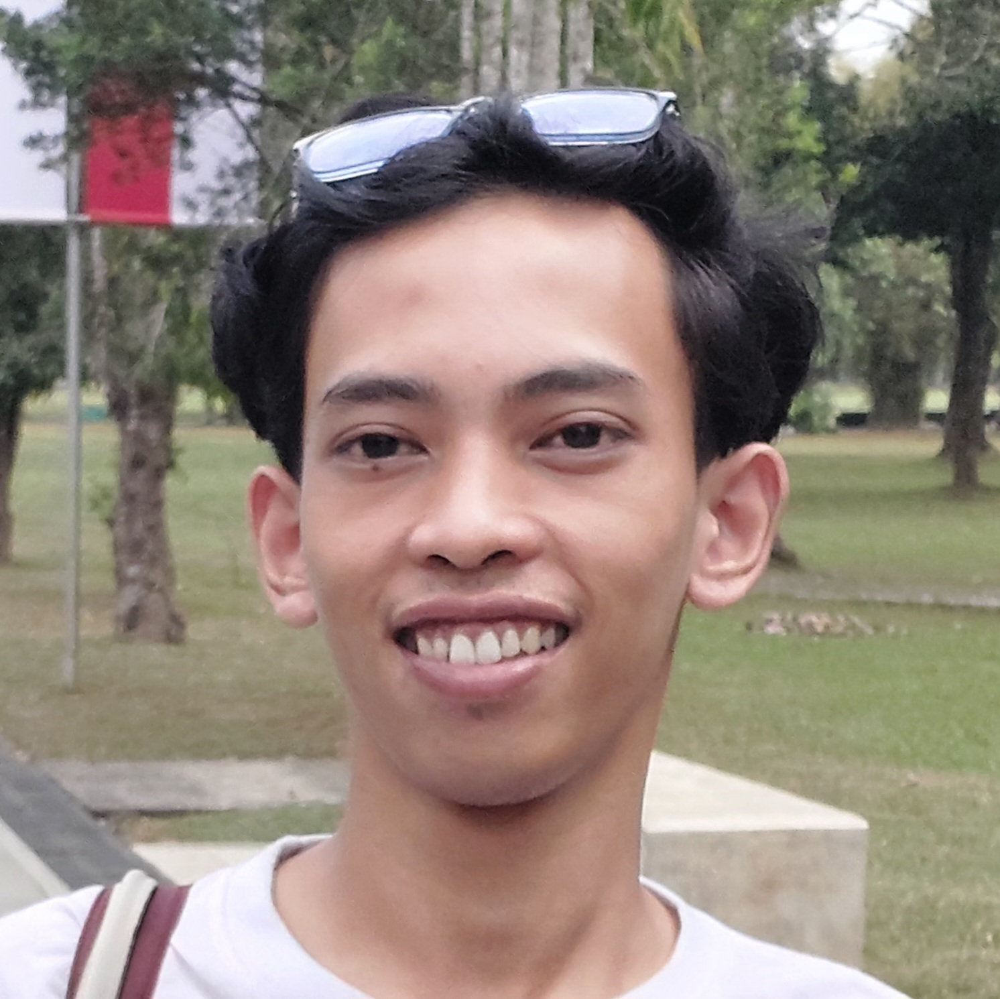
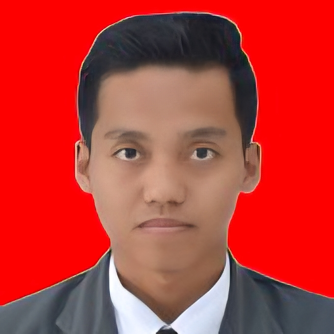

Pusat Studi Hadis Digital
Fakultas Ushuluddin dan Pemikiran Islam UIN Sultan Maulana Hasanuddin Banten
Pusat Studi Hadis Digital (PSHD) UIN Banten merupakan lembaga riset, pelatihan, dan pengembangan ekosistem teknologi digital berbasis keilmuan hadis untuk menjawab tantangan zaman kontemporer.
Struktur Organisasi PSHD
Direktur Pusat Studi Hadis Digital

Muhammad Alif
Memimpin arah strategis kebijakan kelembagaan, riset, dan program pengembangan pusat studi.
Sekretaris Pusat

Salim Rosyadi
Mengelola administrasi kesekretariatan dan tata kelola dokumen kelembagaan.
Divisi Pelatihan

Fahmi Andaluzi
Tugas: Menyusun kurikulum, modul, dan materi bimbingan teknis literasi hadis.
Nagib Romadhony
Tugas: Pengembangan materi instruksional dan fasilitator pelatihan digital.
Divisi Pengembangan

Mus'idul Millah
Tugas: Pengelolaan sistem portal digital, database, dan teknologi penunjang.
Divisi Kemitraan

Repa Hudan Lisalam
Tugas: Membangun jejaring kerja sama eksternal dan relasi kelembagaan.

Mohamad Mashudi
Tugas: Publikasi kegiatan, dokumentasi program, dan relasi publik.